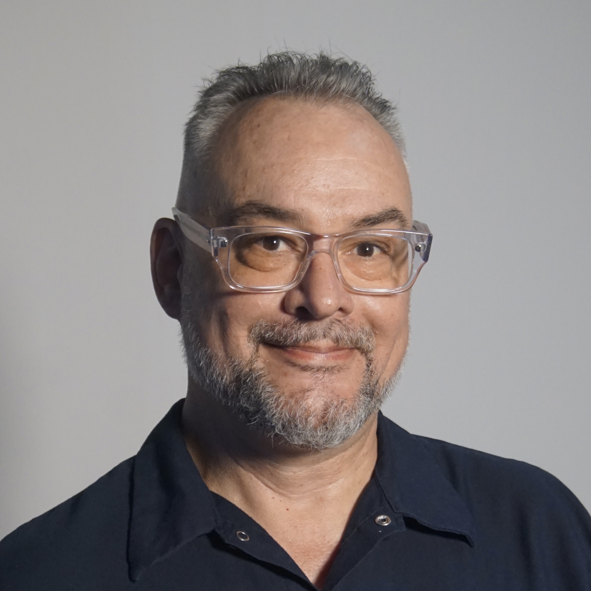
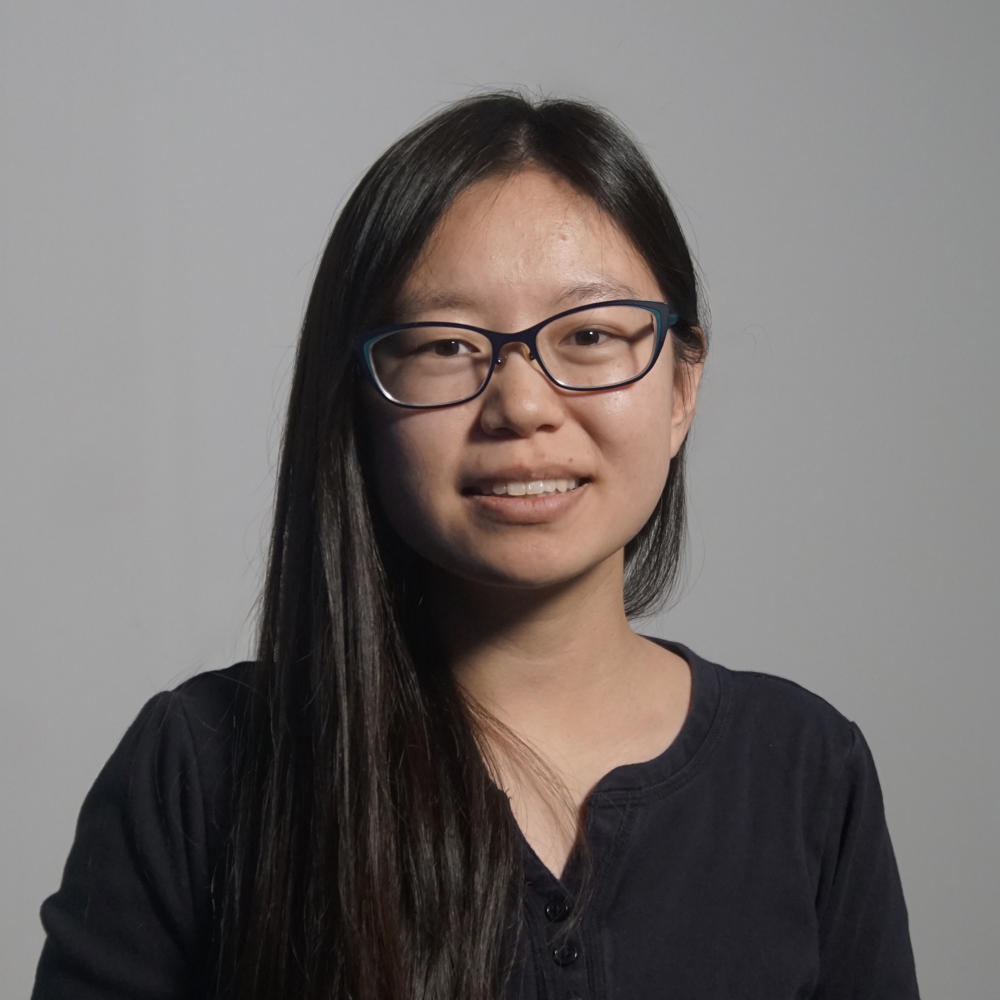
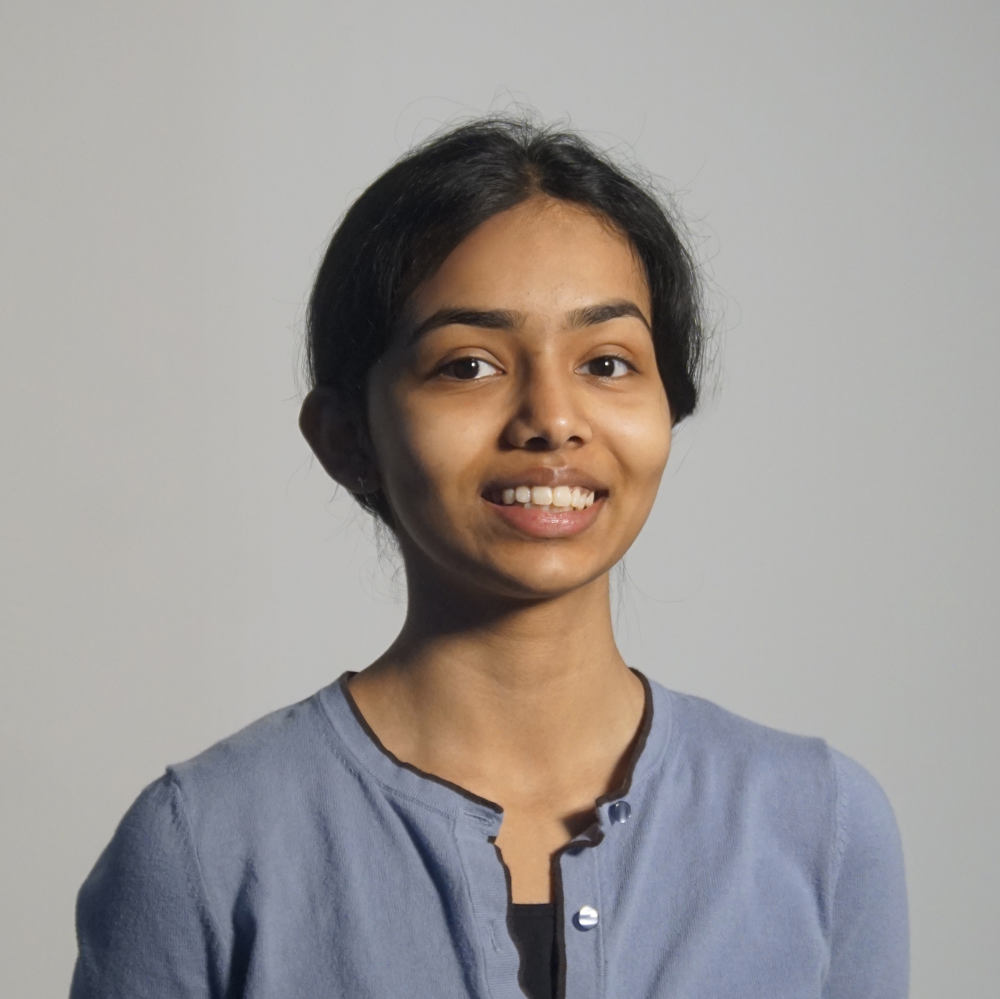

About EIPC
Empathy in Point-Clouds [EIPC] is a faculty-student research project seeking to redefine the terms for creating radically accessible and inclusive architecture. From buildings and environments to digital infrastructure and urban technologies, the EIPC team utilizes Unreal Engine and LiDAR to develop workflows for immersive empathy-driven design.
We prototype, test, and validate complex design methodologies on the UM campus to navigate imaginative worlding processes. The meta-verse offers an ideal site to reposition architecture within Spatial Justice ethics. Our methods challenge standard LiDAR use, promoting data curation that animates the urban imaginary vividly.
Our Team
Dawn Gilpin
EIPC Founder

Robert Adams
EIPC Founder

Mardy Hillengas
EIPC Director

Celine Shaji
Research Assistant
Roy Wu
Research Assistant
Previous Members
2024
- John Spraberry
- Matthew Mansour
- Charlotte Lee
- Ming Chen
2023
- Qilmeg Doudatcz
- Edward Rapa
- Dylan Ling
- Lili Omilian
- Junde Song
2022
- Yipeng Lin
- Heming Huang
- Jiangyue Mao
- Andrew Border
- Dak Daruri
- Sophia Chen
- Matt Priskorn
- Xin Li
- Sang Won Kang
- Eden Boes
- Grieta Blaka
- Nicole Tooley
- Jim Benjey
2021
- Nellie Shih
- Ankita Mahajan
- Karun Ellango
- Benjamin Rossano